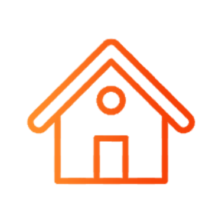

3. O que deve ser denunciado?
É importante saber quais os tipos de condutas inadequadas devem ser denunciadas no Canal para que se tenha o perfeito entendimento do escopo de um Canal de Denúncias.


Canal de Denúncias | Treinamento online